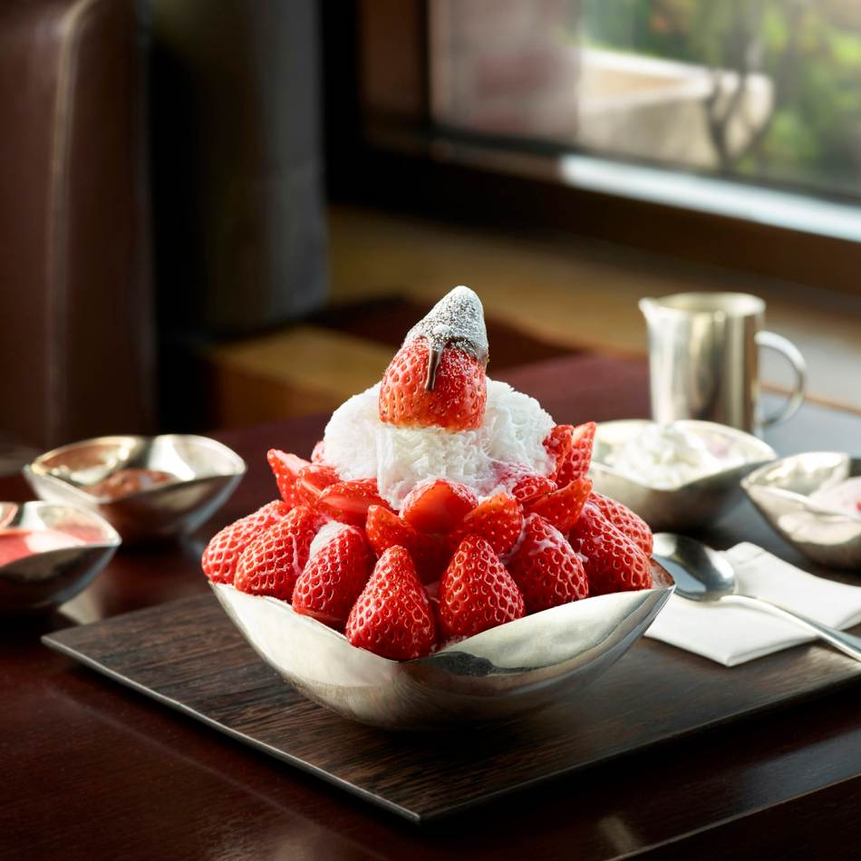

บิงซูสตรอว์เบอร์รี่

วัตถุดิบ
- นมสดรสจืด 800 มิลลิลิตร
- นมข้นหวาน 180 มิลลิลิตร
- สตรอว์เบอร์รี่สด 150 กรัม *ทำซอสสตรอว์เบอร์รี่*
- น้ำตาล 50 กรัม *ทำซอสสตรอว์เบอร์รี่*
- สีผสมอาหารสีแดง *ทำซอสสตรอว์เบอร์รี่*
- วิปปิ้งครีมปริมาณตามชอบ
- สตรอว์เบอร์รี่ สำหรับตกแต่ง
- บราวนี่
- นมข้นสำหรับราด
TOP
วิธีทำ
STEP 1 : ทำบิงซูสตอเบอร์รี่
-
เทนมสดลงในถุงซิปล็อก ไล่ลมออกแล้วปิดปากถุงให้แน่น นำไปแช่ในช่องฟรีซ
จนกว่าจะกลายเป็นน้ำแข็ง ระหว่างนี้ ให้คอยบีบ ๆ นวด ๆ ถุง
จะทำให้น้ำแข็งไม่เกาะกันเป็นก้อน และเป็นเกล็ดน้ำแข็งง่ายขึ้น
-
นำสตรอว์เบอร์รี่ใส่ชาม แล้วใส่น้ำตาล 50 กรัมลงไป เอาเข้าไมโครเวฟเป็นเวลา
3 นาที ให้น้ำตาลละลายเข้ากันกับสตรอว์เบอร์รี่ จากนั้น นำใส่เครื่องปั่น
เติมสีผสมอาหารสีแดงลงไปเล็กน้อย เพื่อให้สีแดงสวยมากขึ้น เสร็จแล้ว
ปั่นให้ละเอียด แล้วนำไปแช่ในตู้เย็น
-
เทวิปปิ้งครีม ปริมาณตามชอบ แล้วใช้เครื่องตี ตีให้วิปปิ้งครีมข้นขึ้น
จนมีลักษณะตั้งยอดอ่อน
-
ใส่สตรอว์เบอร์รี่และบราวนี่ไว้ในชาม นำน้ำแข็งนมสดออกมา โปะไว้ด้านบน
สำหรับใครที่อยากทำให้น้ำแข็งพูนสูง สวยงาม
ให้นำน้ำแข็งนมสดใส่ชามที่มีความกว้างของปากชามเท่ากัน แต่ก้นลึก
ใส่ลงไปจนเต็ม เสร็จแล้ว นำมาประกบให้พอดีกัน
ก็จะได้น้ำแข็งที่โปะไว้ด้านบนอย่างสวยงาม
- นำวิปปิ้งครีมที่ตีไว้ มาเคลือบน้ำแข็งให้ทั่ว
-
วางสตรอว์เบอร์รี่ ตกแต่งไว้ตรงขอบชามทุกด้าน แล้วโรยนมผงไว้ด้านบนสุด
-
นำซอสตรอว์เบอร์รี่ออกมาใส่ถ้วยเล็ก สำหรับราด พร้อมกับนมข้นหวาน
และวิปปิ้งครีม ที่เตรียมไว้ เป็นอันเสร็จ
TOP
ตารางโภชนาการ
| สารอาหาร |
ปริมาณ |
หน่วย |
| โปรตีน |
5 |
g |
| น้ำตาล |
20 |
g |
| ไขมัน |
g |
| หมายเหตุ |
|
|
|
|
|
TOP
Source:Bingsu